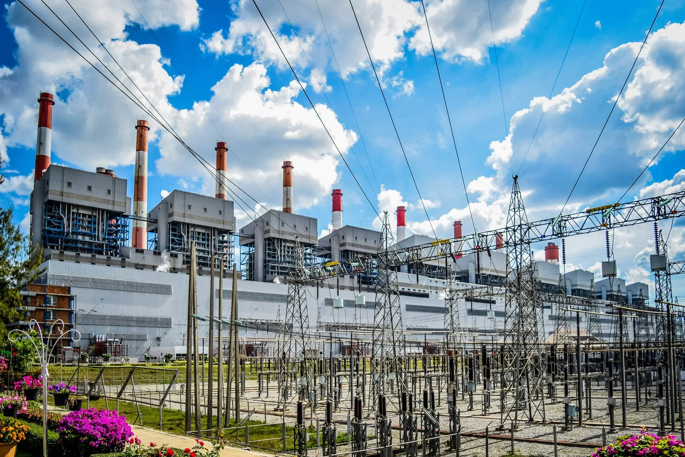
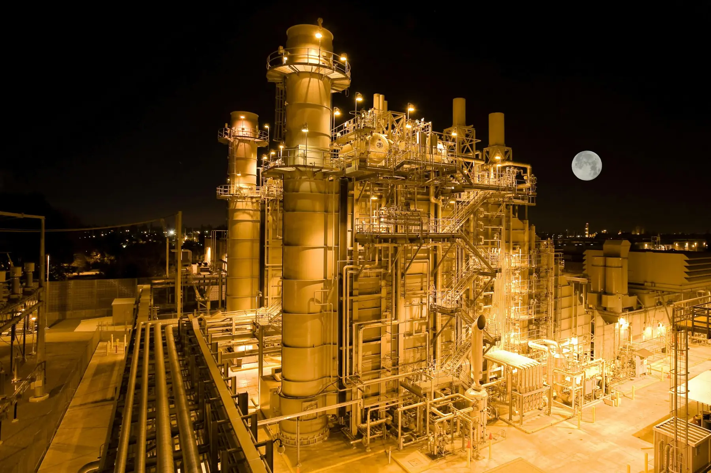

BRES – projekce TZB a energetických celků


Projekce a realizace energetických celků
Váš partner v oblasti tepelné energie. Od studie a projektu přes realizaci až po provoz tepelného hospodářství.
Co dělámeProjektová činnost v oblasti TZB a technologických staveb
Výroba a prodej tepelné energie, provoz energetických celků a realizace technologických staveb.
ProjekceVýkresy ve 3D podobě
Energetické celky projektujeme ve 3D a spolupracujeme s realizátory staveb. Zajišťujeme také technický a stavební dozor.
ReferenceCo děláme
Projektujeme, realizujeme a provozujeme energetické celky
- Projektová činnost v oblasti TZB a technologických staveb
- Výroba a prodej tepelné energie
- Provoz energetických celků
- Realizace technologických staveb
- Energetické poradenství
- Zpracování zadávací dokumentace
- Výkon technického a stavebního dozoru
Naše přístupy
Individuální přístup se zaměřením na snížení provozních nákladů
NAŠE FILOZOFIE
Ke každému zákazníkovi přistupujeme individuálně. Naším cílem je snížit provozní náklady budovy nebo technologického celku, který provozuje.
Více informací – NAŠE FILOZOFIESAV
Studie alternativních způsobů vytápění a ohřevu vody (SAV) porovnává možná řešení ve vašem objektu a vyhodnocuje jejich ekonomický přínos.
Více informací – SAVOUTSOURCING
Provoz tepelného hospodářství svěřujete odborné společnosti na základě smlouvy. Vy se věnujete své hlavní činnosti, my zajišťujeme provoz.
Více informací – OUTSOURCINGEPC
Metoda Energy Performance Contracting (EPC) umožňuje realizovat úsporná opatření bez okamžité investice. Náklady se hradí z prokázaných úspor energie.
Více informací – EPC